Till vänster (mot blå bakgrund) är Adrean
Clarks munsymboler (från 2012), därefter följer (mot vit bakgrund) Todd Hicks
utökade symboluppsättning (från 2018) och sist
(mot grön backgrund) min variant av symbolen. De delar
av beskrivningarna som bara förekommer i tidigare källor
är skuggade nedan.
smile
“laugh”
frown
“cry”
flat lips
“interest”
blow & motor lips
pressed lips (pensive)
lips pulled to one side
tongue out
blow raspberry
pursed lips
lips out (“kiss”)
kissy
(wide) open mouth
open mouth
lips out “sh”
“nut”
clenched teeth (bared teeth)
clenched & lips out (“cha”)
open mouth & tongue out
tongue wiggle
tongue out to the side
biting lip
“th”
round mouth
puffed & round
sucked cheeks
puffed cheeks
pulled to the side (“recently”)
“disgust”
Many of Clark’s (from 2012) and Hicks’ (from 2018) symbols are similar
enough to be indistinguishable, and I think that many of Hicks’ generalizations
are perfectly straightforward (like the double circle-segment for ’motion’, be
it a movement of the lips or the tongue).
However in Clark’s symbols I see a distinction between cheek
and wide open mouth which I think is missing from Hicks’. I would
suggest that cheek (regardless of whether it is sucked or puffed) should
be portrayed by a circle segment that is less than a half circle, while
the wide open mouth should be written as a circle segment larger than a
half circle. This way sucked cheeks and wide open mouth are
clearly distinguishable from each other, while sucked and puffed
cheeks are consistent with each other.
FIXME: BILD från bokenAdrean Clarks munsymboler (2012) från
boken How to
Write American Sign Language.
därefter följer
Todd Hicks munsymboler (fejsbok 6
april och15 april
2018).
Munbilder i genuina tecken
Informationen här kommer ifrån
”A
Preliminary Analysis of Visual Mouth Segments in Swedish Sign Language”
av Bergman & Wallin (2001). Alla munbilder i teckenspråket är inte
inkluderade i artikeln – detta på grund av att den endast
analyserar genuina tecken och således inte beaktar tecken men
svenskinlånad munbild.
Huvudsakliga munbilder
Nedanstående uppställning innefattar information från Bergman & Wallin
(omarkerat) och ny information (markerat i blått).
Frågetecken i de blå fälten markerar osäkerhet, och kan komma att
uppdateras/ändras i framtiden.
”The feature open distinguishes between the two classes open and
closed segments and pertains to the position of the lower lip. A segment
in which the lower lip has contact with the upper lip or the upper teeth
is marked −open, a segment in which the lower lip is not in
contact is marked +open. Segment number I (see fig. 12) resembles
a neutral, closed mouth, in that the lips are in contact with each other,
but the lips are tense. The neutral, closed mouth, is not a segment. It
is only when there is extra energy added to the closed mouth, that it
participates in the language production. In also refers to a
position of the lower lip, viz. whether the lower lip is inward and thus
in contact with the upper teeth or not. The feature air refers to
”active” air. If the mouth is -open, as in segment II, the result
is puffed cheeks.” [s 5]
”Corner is used for activity in the corners of the
mouth, forward refers to lip protrusion and, and round to
lip contraction. The feature jaw pertains to jaw opening, i.e.
whether the jaw is markedly lowered or not. Note that in all open
segments (when the lower lip is not in contact), the jaw is also
normally lowered but, as it were, in an unmarked, relaxed
way. Tongue indicates whether the tongue is protruding or not.” [s
10]
Varianter
Följande munbilder avviker från de ovanstående endast i luftflöde och
tungans placering. De betraktas i Bergman & Wallin som allofona varianter
till de ovanstående. (Dvs /forwardtongue/
och /forwardtongue/ ses bägge som allofoner till
/forward/ osv.)
/pouted/[2] och varianter
med /air/ illustreras inte i artikeln utan beskrivs
endast i artikeltexten (de bilder som förekommer nedan kommer från andra
källor).
I sammanställningen ovan markeras ny och extrapolerad information
med blå bakgrund), medan information ifrån Bergman
& Wallins artikel har vit bakgrund. Frågetecken i de blå fälten markerar
osäkerhet, och kan komma att uppdateras/ändras i framtiden. Beskrivningen
av /pouted/[2] härrör ifrån följande
text i artikeln:
”However, the oral adverb meaning ‘normally’, ‘with ease’ when used with
dynamic verbs does not use any of the segments in our set. It is a closed
mouth with protruding lips so a possible description would be -open,
+forward.” [s 13]
Nedan summeras information om orala adverb ifrån ett flertal olika källor.
För att göra det tydligt vilken information som kommer varifrån används
följande förkortningar:
ÖST: Övningskompendium för svenskt teckenspråk
(2016)
I de fall då en symbol/munbild har dubbla rader i tabellen nedan,
beskriver den första raden måttadverb (som används tillsammans med
adjektiv i storleks- och formbeskrivningar) och den andra
lila raden sättsadverb (som används tillsammans med
dynamiska verb).
liten, mycket liten, jätteliten (huvudet slås fram)
Kommentarer:
[sa] borde kallas [ia] eftersom den första munbilden är samma
som [i]. I Teckenspråk – så klart! används beteckningen [ja]
istället – ett steg i rätt riktning.
[m] verkar användas för två orala adverb som ser olika ut?
Förvirrande.
Svenska munbilder
Att göra:
Lägg till [ɧ], [ɕ] och [ŋ]
Ge alla munbilder har en teckenskriftsymbol
Kategorisera de återstående symbolerna
Jämför med någon annans resultat
Regler för hur svenskpåverkade munbilder reduceras
Munbilderna nedan är tagna ifrån YouTube-videon
Svenska alfabetet, Swedish
alphabet (by Hassan Khajeh Abdollahi) som demonstrerar det svenska
alfabetet. I denna sammanställning saknas [ɧ]
(chock, stjärna), [ɕ]
(tjock, kärna) och [ŋ] (ingen, unken)
då de inte finns med i alfabetet (och således inte fanns med i videon).
Uppställning efter likhet
Tonalitetspar är skrivna intill varandra nedan. (Ett tonalitetspar är
två talspråksfonem som båda har samma artikulationsställe och
artikulationssätt – den enda skillnanden är att den ena är tonande, och den
andra tonlös, tex B–P och G–K. Eftersom skillnaden i tonalitet inte syns,
ser båda fonemen alltid likadana ut.)
tonalitetspar
b
p
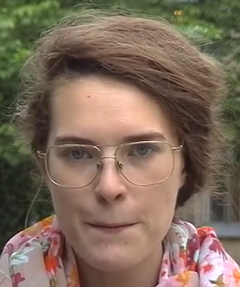 m
tonalitetspar
tonalitetspar
?
d
t
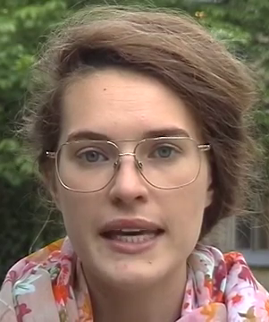 g
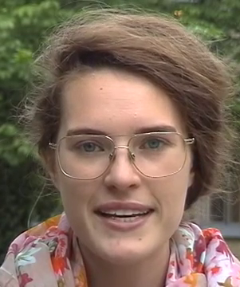 k
n
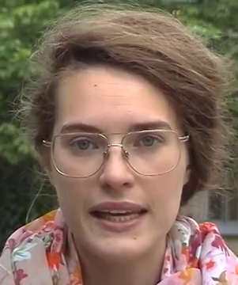 e
tonalitetspar
f
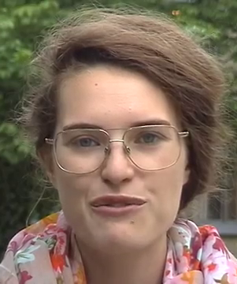 v
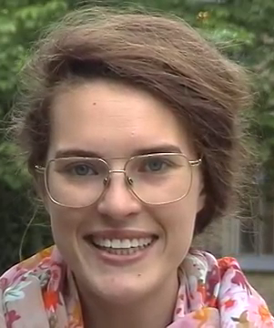 i
j
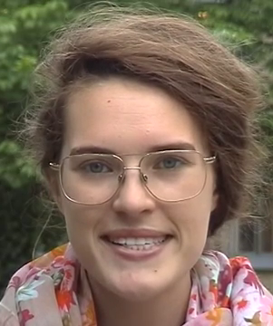 s
?
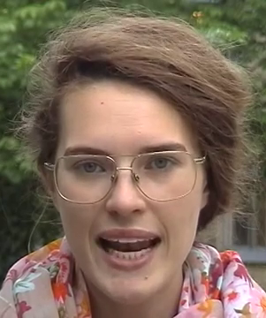 l
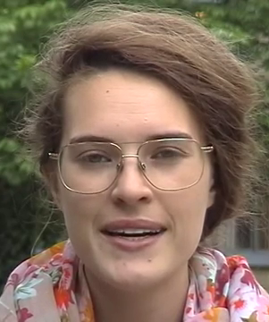 r
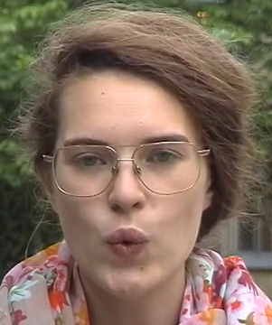 o
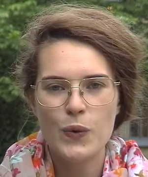 u
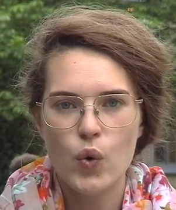 å
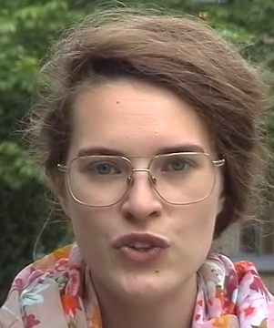 y
?
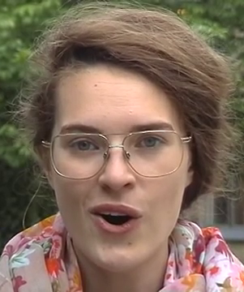 a
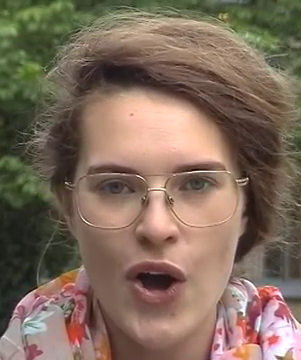 ö
Ännu okategoriserade.
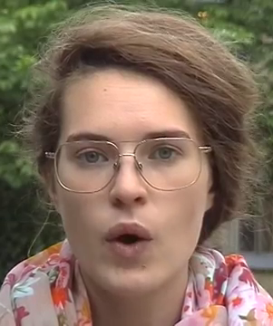 h
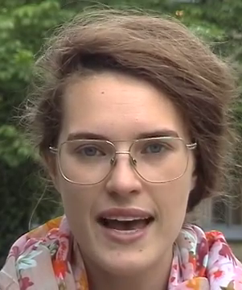 ä
Alfabetet
Nedan är alla de bilder du finner ovan, men i här alfabetisk ordning
(vokaler är markerade i grönt).
I listan finns inte C, Q, W, X och Z med (eftersom de inte utgör egna
fonem i talspråket). Saknas gör också fonemen [ɧ]
(chock, stjärna), [ɕ]
(tjock, kärna) och [ŋ] (ingen,
unken) eftersom de inte fanns med i videon varifrån bilderna
tagits.
a
b
d
e
f
g
h
i
j
k
l
m
n
o
p
r
s
t
u
v
y
å
ä
ö
Referenser
Skriv rent denna sektion.
Bergman, Brita (1995)
Kompendium
i teckenspråksgrammatik. Stockholm, Avdelningen för teckenspråk,
Institutionen för lingvistik, Stockholms universitet.
Eira Balkstam, Joel Bäckström, Mats Jonsson, Magnus Ryttervik och
Nikolaus Riemer Kankkonen (2016) Övningskompendium för svenskt
teckenspråk.
Fotnoter
1 I denna text använder jag [u] för den munbild som är
förknippad med svenskans u-ljud, och [β] för det som i
teckenspråksliteraturen traditionellt skrivs ”[u]” (när man talar om
orala adverb). – Munbilden för [β] är densamma som för ljudet bilabial
frikativ (som i tex spanskans Havana) vilken i IPA
(International
Phonetic Alphabet) skrivs ”β”.
2 Det jag här kallar /pouted/
namnges inte av Bergman & Wallin (2001) utan beskrivs där endast
som [−open, +forward].


 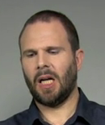
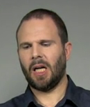